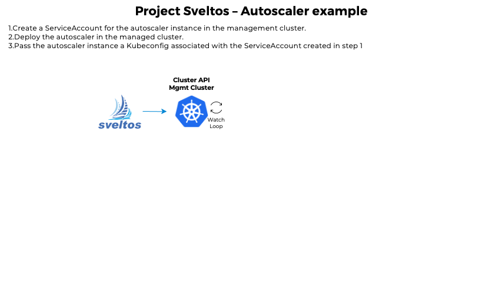

Helm Charts and Resources as Templates
Introduction to Templates
Sveltos allows you to represent add-ons and applications as templates. Before deploying to the managed clusters, Sveltos instantiates these templates. It can gather the information required either from the management cluster or the managed clusters.
Example - Calico Deployment
Let's assume you woild like to deploy Calico CNI in multiple CAPI-powered clusters while fetching Pod CIDRs from the corresponding CAPI Cluster instance. With the ClusterProfile definition, you can create a configuration that specifies these details, and the deployment will be distributed to all matching clusters.
In the below example, we use the Sveltos label env=fv to match all the cluster who need to get Calico as the desired CNI.
---
apiVersion: config.projectsveltos.io/v1alpha1
kind: ClusterProfile
metadata:
name: deploy-calico
spec:
clusterSelector: env=fv
helmCharts:
- repositoryURL: https://projectcalico.docs.tigera.io/charts
repositoryName: projectcalico
chartName: projectcalico/tigera-operator
chartVersion: v3.24.5
releaseName: calico
releaseNamespace: tigera-operator
helmChartAction: Install
values: |
installation:
calicoNetwork:
ipPools:
{{ range $cidr := .Cluster.spec.clusterNetwork.pods.cidrBlocks }}
- cidr: {{ $cidr }}
encapsulation: VXLAN
{{ end }}
Likewise, you can define any resource contained in a referenced ConfigMap/Secret as a template by adding the projectsveltos.io/template annotation. This ensures that the template is instantiated at the time of deployment, making your deployments faster and more efficient.
Sveltos supports the template functions that are included from the Sprig open source project.
Variables
By default, the templates have access to the below managment cluster resources:
- CAPI Cluster instance. The keyword is
Cluster - CAPI Cluster infrastructure provider. The keyword is
InfrastructureProvider - CAPI Cluster kubeadm provider. The keyword is
KubeadmControlPlane - For cluster registered with Sveltos, the SveltosCluster instance. The keyword is
Cluster
Additionally, Sveltos can fetch any resource from the management cluster. You can set the templateResourceRefs in the ClusterProfile Spec section to instruct Sveltos to do so.
Example - Autoscaler Definition
ClusterProfile
The below YAML defintion file instructs Sveltos to fetch the Secret instance autoscaler in the namespace default and make it available to the template with the keyword AutoscalerSecret.
apiVersion: config.projectsveltos.io/v1alpha1
kind: ClusterProfile
metadata:
name: deploy-resources
spec:
clusterSelector: env=fv
templateResourceRefs:
- resource:
kind: Secret
name: autoscaler
namespace: default
identifier: AutoscalerSecret
...
policyRefs:
- kind: ConfigMap
name: info
namespace: default
ConfigMap
The ConfigMap default/info referenced by the ClusterProfile above can then be expressed as a template:
apiVersion: v1
kind: ConfigMap
metadata:
name: info
namespace: default
annotations:
projectsveltos.io/template: "true" # add annotation to indicate Sveltos content is a template
data:
secret.yaml: |
# AutoscalerSecret now references the Secret default/autoscaler
apiVersion: v1
kind: Secret
metadata:
name: autoscaler
namespace: {{ (index .MgmtResources "AutoscalerSecret").metadata.namespace }}
data:
token: {{ (index .MgmtResources "AutoscalerSecret").data.token }}
ca.crt: {{ $data:=(index .MgmtResources "AutoscalerSecret").data }} {{ (index $data "ca.crt") }}
Please Note: The MgmtResources are internally defined as
If you want to refer to any resource fetched by Sveltos within a template, you can do so using the following syntax:
The same principle as above is applied to Helm charts. The values section of a Helm chart can reference any field of a Secret instance named autoscaler in the default namespace by referring to it as AutoscalerSecret.
RBAC
Sveltos adhere to the least privilege principle. That means that Sveltos does not have all the necessary permissions to fetch resources from the management cluster by default. Therefore, when using templateResourceRefs, you need to provide Sveltos with the correct RBAC.
Providing the necessary RBACs to Sveltos is a straightforward process. The Sveltos' ServiceAccount is tied to the addon-controller-role-extra ClusterRole. To grant Sveltos the necessary permissions, simply edit the role.
If the ClusterProfile is created by a tenant administrator as part of a multi-tenant setup, Sveltos will act on behalf of (impersonate) the ServiceAccount that represents the tenant. This ensures that Kubernetes RBACs are enforced, which restricts the tenant's access to only authorized resources.
Namespace
When using templateResourceRefs to fetch resources, the namespace field is optional.
How it works
- If the namespace field is set, Sveltos will fetch the resource in that specific namespace.
- If the namespace field is left empty, Sveltos will fetch the resource in the namespace of the cluster at the time of deployment.
Example - Autoscaler Dynamic Resource Creation
When deploying add-ons in a managed cluster, there may be a need to first dynamically create resources in the management cluster and then use their values to instantiate add-ons in the managed cluster.
For example, when deploying the autoscaler with ClusterAPI, one option is to deploy the autoscaler in the managed cluster and provide it with a Kubeconfig to access the management cluster so it can scale up/down the nodes in the managed cluster using the ClusterAPI resources.
Management cluster Managed cluster
+---------------+ +------------+
| mgmt/workload | | ? |
| | kubeconfig | ---------- |
| |<------------+ autoscaler |
+---------------+ +------------+
We want Sveltos to take care of everything. So we instruct Sveltos to perform the following tasks for each managed cluster:
- Create a ServiceAccount for the autoscaler instance in the management cluster.
- Deploy the autoscaler in the managed cluster.
- Pass the autoscaler instance a Kubeconfig associated with the ServiceAccount created in step 1.
Step 1: Create SA Management Cluster
When a new cluster matches the ClusterProfile's clusterSelector, we want Sveltos to automatically create a ServiceAccount and a Secret for that ServiceAccount in the management cluster. To achieve this, we can reference a ConfigMap containing the necessary resources and set deploymentType: Local to instruct Sveltos to deploy the resources in the management cluster.
policyRefs:
- deploymentType: Local # Content of this ConfigMap will be deployed
# in the management cluster
kind: ConfigMap
name: serviceaccount-autoscaler # Contain a template that will be
# instantiated and deployed in the
# management cluster
namespace: default
In the above code block, the ConfigMap named serviceaccount-autoscaler contains the template for the ServiceAccount and the Secret, which will be deployed in the management cluster. The deploymentType is set to Local to indicate that the resources should be deployed in the management cluster.
To below the resource above, please remember to grant Sveltos permissions to do so.
This ServiceAccount will be given permission to manage MachineDeployment for a specific clusterAPI powered cluster (we are leaving this part out).
Step 2: Deploy Autoscaler Managed Cluster
When deploying autoscaler in the managed cluster, it is necessary to provide a Kubeconfig associated with the ServiceAccount that was created earlier. This enables the autoscaler running in the managed cluster to communicate with the management cluster and scale up/down the number of machines in the cluster.
To achieve this, the Secret Sveltos created in the management cluster needs to be fetched. We can do this by the use of the below code:
Please Note: Since we are not specifying the namespace, Sveltos will automatically fetch this Secret from the cluster namespace.
Next, we need to instruct Sveltos to take the content of the ConfigMap secret-info in the default namespace and deploy it to the managed cluster (deploymentType: Remote).
- deploymentType: Remote # Content of this ConfigMap will be
# deployed in the managed cluster
kind: ConfigMap
name: secret-info # Contain a template that will be instantiated
# and deployed in the managed cluster
namespace: default
The content of this ConfigMap is a template that uses the information contained in the Secret above:
# This ConfigMap contains a Secret whose data section will contain token and ca.crt
# taken from AutoscalerSecret
apiVersion: v1
kind: ConfigMap
metadata:
name: secret-info
namespace: default
annotations:
projectsveltos.io/template: "true" # indicate Sveltos content of this ConfigMap is a template
data:
secret.yaml: |
apiVersion: v1
kind: Secret
metadata:
name: autoscaler
namespace: {{ (index .MgmtResources "AutoscalerSecret").metadata.namespace }}
data:
token: {{ (index .MgmtResources "AutoscalerSecret").data.token }}
ca.crt: {{ $data:=(index .MgmtResources "AutoscalerSecret").data }} {{ (index $data "ca.crt") }}
Autoscaler All-in-One - YAML Definition

apiVersion: config.projectsveltos.io/v1alpha1
kind: ClusterProfile
metadata:
name: deploy-resources
spec:
clusterSelector: env=fv
templateResourceRefs:
- resource:
kind: Secret
name: autoscaler
identifier: AutoscalerSecret
policyRefs:
- deploymentType: Local # Content of this ConfigMap will be deployed
# in the management cluster
kind: ConfigMap
name: serviceaccount-autoscaler # Contain a template that will be
# instantiated and deployed in the management
# cluster
namespace: default
- deploymentType: Remote # Content of this ConfigMap will be deployed in the
# managed cluster
kind: ConfigMap
name: secret-info # Contain a template that will be instantiated and deployed
# in the managed cluster
namespace: default
---
# This ConfigMap contains a ServiceAccount and a Secret for this ServiceAccount.
# Both are expressed as template and use managed cluster namespace/name
apiVersion: v1
kind: ConfigMap
metadata:
name: serviceaccount-autoscaler
namespace: default
annotations:
projectsveltos.io/template: "true" # indicate Sveltos content of this ConfigMap is a template
data:
autoscaler.yaml: |
apiVersion: v1
kind: ServiceAccount
metadata:
name: "{{ .Cluster.metadata.name }}-autoscaler"
namespace: "{{ .Cluster.metadata.namespace }}"
---
# Secret to get serviceAccount token
apiVersion: v1
kind: Secret
metadata:
name: autoscaler
namespace: "{{ .Cluster.metadata.namespace }}"
annotations:
kubernetes.io/service-account.name: "{{ .Cluster.metadata.name }}-autoscaler"
type: kubernetes.io/service-account-token
---
# This ConfigMap contains a Secret whose data section will contain token and ca.crt
# taken from AutoscalerSecret
apiVersion: v1
kind: ConfigMap
metadata:
name: secret-info
namespace: default
annotations:
projectsveltos.io/template: "true" # indicate Sveltos content of this ConfigMap is a template
data:
config.yaml: |
apiVersion: v1
kind: Secret
metadata:
name: autoscaler
namespace: {{ (index .MgmtResources "AutoscalerSecret").metadata.namespace }}
data:
token: {{ (index .MgmtResources "AutoscalerSecret").data.token }}
ca.crt: {{ $data:=(index .MgmtResources "AutoscalerSecret").data }} {{ (index $data "ca.crt") }}